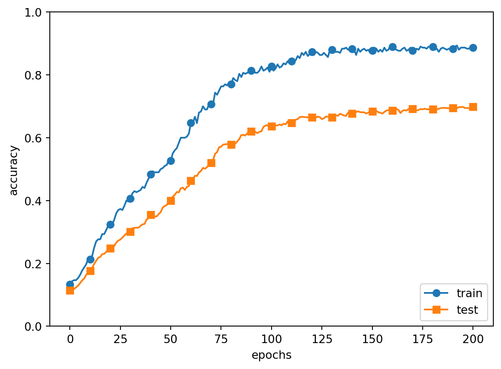
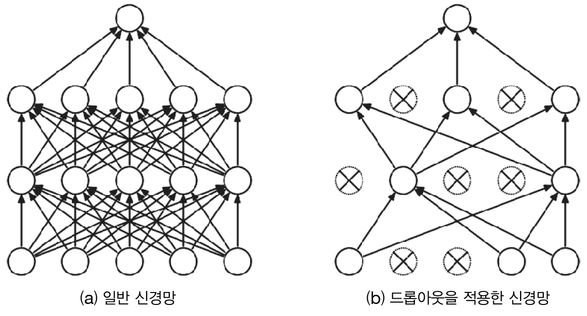
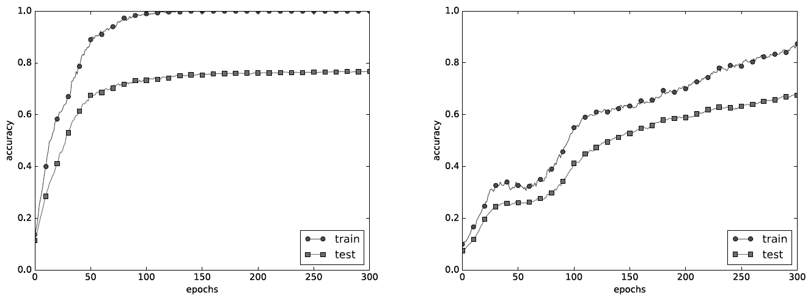

먼저 \frac{1}{2}항을 살펴보면 이는 수학적 편의를 위한 트릭에 해당합니다. 더해진 값을 역전파시 미분해야 하는데 \lambda|\textbf{W}|_2^2을 미분하는 것보다 \frac{1}{2}\lambda|\textbf{W}|_2^2을 미분하여 \lambda\textbf{W}가 되면 보다 식을 단순하게 만들 수 있기 때문입니다.
L2 Norm의 제곱은 어디로 갔을까요? 이는 최적화 과정에서 모델 가중치 \textbf{W}를 업데이트할때 제곱근 연산이 필요없기 때문에 불필요한 내용을 생락한 것입니다.
지금까지 살펴 본 내용을 바탕으로 가중치 감소에 따른 효과를 살펴 보도록 하겠습니다. 하이퍼파라미터인 \lambda는 0.1로 설정하여 가중치 감소를 적용하였습니다.

여전히 오버피팅이 발생하고 있지만 이전과 비교하여 상당부분 훈련 데이터와 시험 데이터간 정확도의 차이가 줄어든 것을 확인할 수 있습니다. 즉, 오버피팅이 억제된 효과를 확인할 수 있습니다.
13.3 Dropout
오버피팅을 억제하기 위하여 가중치 감소를 사용하였습니다. 구현도 쉽고 효과도 어느정도 확인하였습니다. 그러나 신경망의 모델이 복잡해지면 가중치 감소만으로는 적절한 대으이 어려울 수 있습니다.
이러한 문제를 해결하고자 고안된 기법이 바로 드롭아웃입니다. 드롭우웃은 신경망의 각층의 노드를 훈련과정에서 임의로 삭제하면서 신호전달을 차단하는 방법입니다. 다만, 시험 또는 시험과정에서는 모든 노드를 사용합니다.2
2 주의 할 것은 시험 과정에서 각 노드 또는 뉴런의 출력에 훈련때 삭제 안한 비율을 곱하여 출력을 수행합니다.

Figure 13.1: Concept of Dropout
위에서 설명한 드롭아웃을 구현하도록 하겠습니다. 먼저 순전파를 담당하는 forward메서드에서는 훈련 때(train_flg=True)만 잘 계산해두면 시험 때 단순히 데이터를 흘리기만 하면됩니다.3
3 삭제 안한 비율은 곱하지 않아도 됩니다.
class Dropout:def__init__(self, dropout_ratio=0.5):self.dropout_ratio = dropout_ratioself.mask =Nonedef forward(self, x, train_flg=True):if train_flg:1self.mask = np.random.rand(*x.shape) >self.dropout_ratioreturn x *self.maskelse:return x * (1.0-self.dropout_ratio)def backward(self, dout):2return dout *self.mask
1
self.mask에 삭제할 뉴런을 False로 표시
2
backwardsms ReLU와 동작원리가 같음
위의 구현코드를 가지고 실험한 7층의 신경망의 학습결과입니다.

Figure 13.2: Comparison of results(without Dropout(Left), with Dropout(Right))
드롭아웃을 적용한 경우 훈련 데이터와 시험 데이터간 정확도의 차이가 확연하게 줄어 들었음을 확인할 수 있습니다. 동시에 표현력도 상당히 개선되었음을 확인할 수 있습니다.
Dropout과 앙상블 학습
기계학습에서 앙상블 학습(ensemble learning)은 개별적으로 학습시킨 여러 모델의 출력을 평균내어 추론하는 방식입니다.
드롭아웃은 무작위로 노드 또는 뉴련을 삭제함으로써 각기 다른 신경망을 학습시킨후 평균을 내어 답하는 것과 비슷합니다.